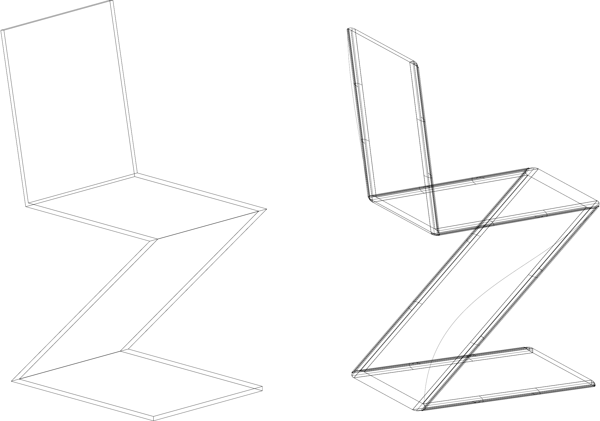
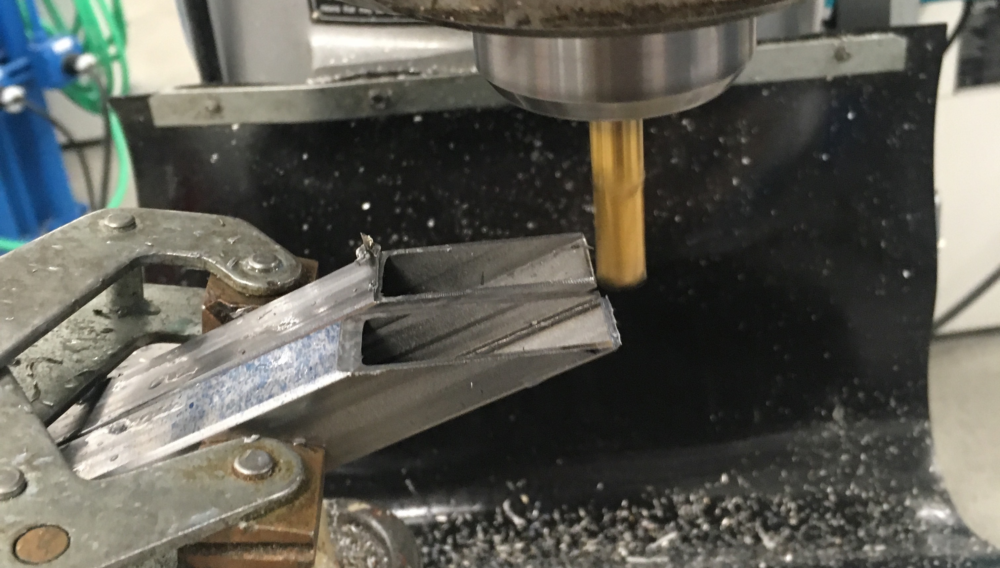
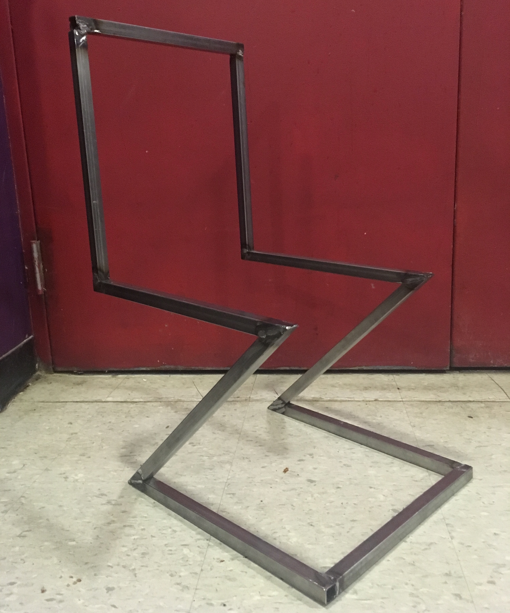
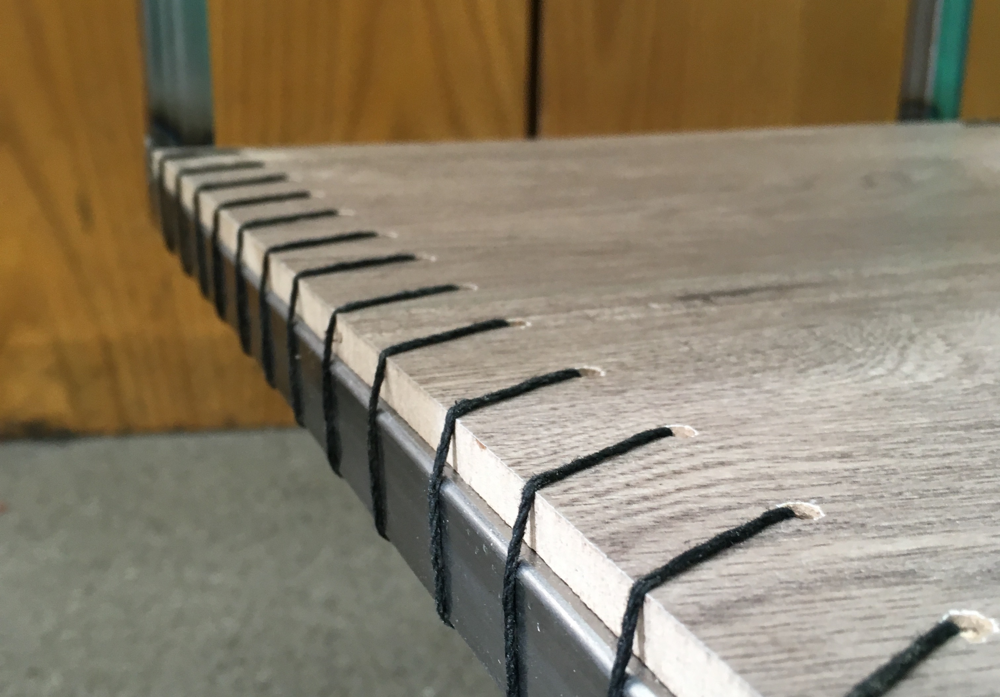
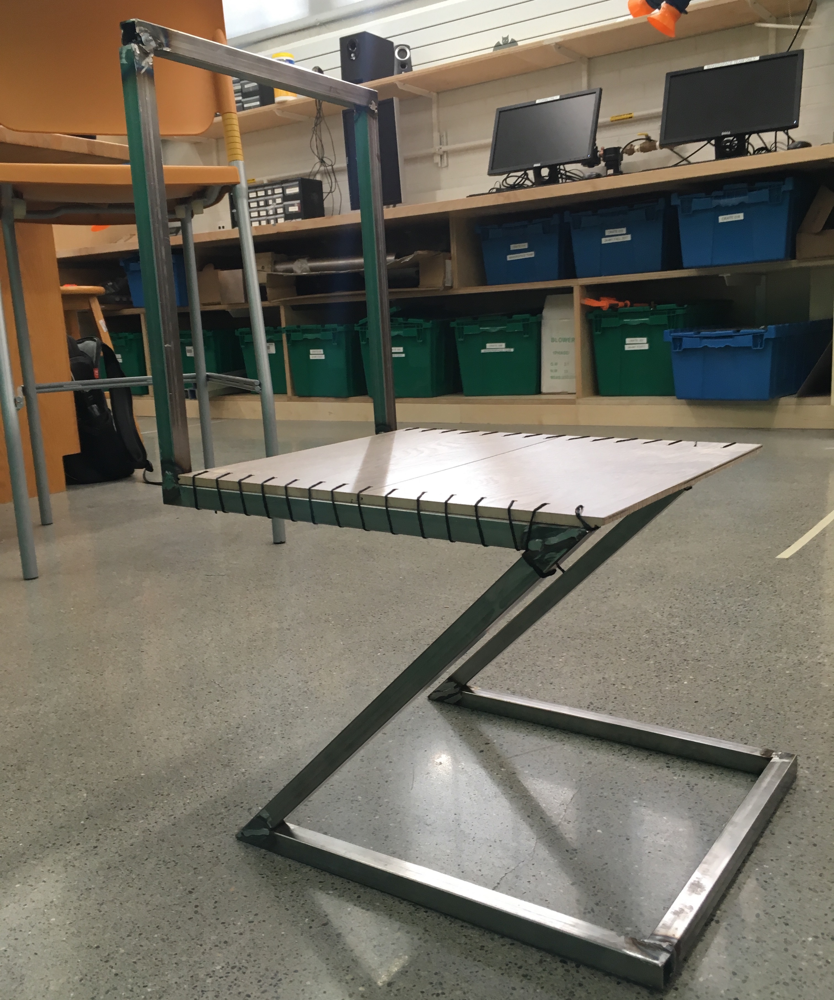
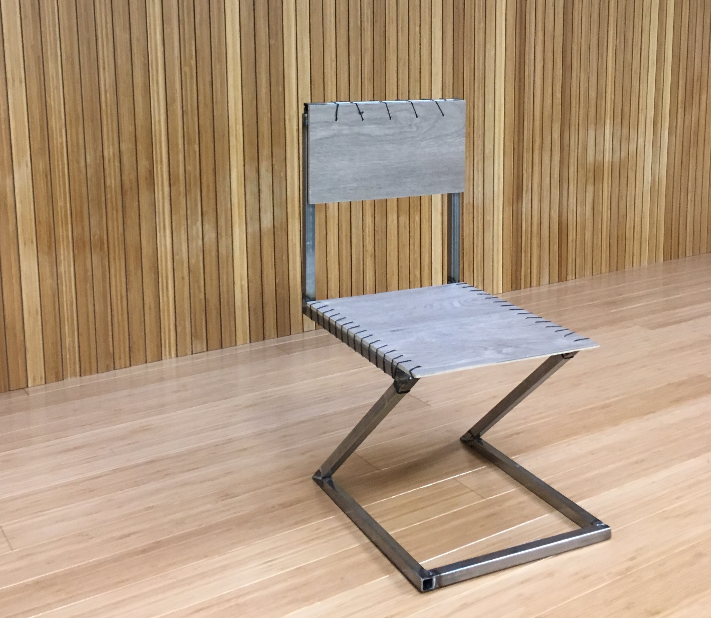
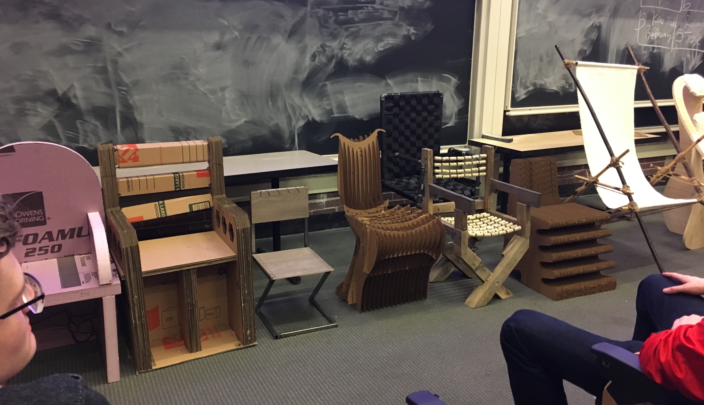

DFM 48 Hour Chair
DFM 48 Hour Chair
In Design for Manufacturing and The Environment class, we were given the task of building a chair capable of supporting 250lbs. We had 1 week between the assignment out date and due date, which meant, due to package delivery problems, that I had 48hours to build a chair and create a report with engineering drawings and design rational.

My inspiration for the chair was the Zig Zag Chair, an outline of which is above. Versions of this chair sell for many hundreds if not thousands of dollars, and I wanted to see if I could do it using as much scrap materials, recycled parts, and sustainable manufacturing principals as possible.
I decided I wanted to make an extremely robust chair, capable of supporting a large amount of weight, while targeting three specific DFM principals the most: reducing part count, ease of disassembly, and ease of recyclability. To meet my goals in those three areas, I decided I would go with an iron stock body, and let the rest of the design be informed by the material I was able to gather.
I began thinking of materials I could find for the seat part of the chair that would look good and support weight. I settled on recycled wood flooring, which a Home Depot employee kindly gave me an old sample of. As I now had less than 36 hours left, I began machining the metal for the frame of the chair.

In order to reduce part count, I opted for no mechanical fastening, and instead chose to weld the body of the chair together. While I was just using an old MIG machine the DFM intention would be that with only 45 degree and 90 degree angles, and clamping fixture could easily be build to allow a TIG welding robot to easily build the chair in a high volume environment. While welding can be a fairly dirty manufacturing process, the durability gain, the lack of any mechanical fastener or adhesive, and the fact that TIG welding can be done fairly cleanly, made this a worthwhile trade off in my my mind. Having not done any welding for about a year, I was mostly happy with how my joints turned out. Just ignore the monstrosity that is the joint on the upper left...

After machining the right angles in the machine shop, bringing the stock to the welding studio on the other side of campus, and then bringing the body back to the machine shop, I was ready to add the seating.

I looked through machine shop scrap to find something I could use to affix the flooring to the base of the chair, and found some hemp twine. After boring holes into the wood, I threaded the twine and tightened the part into place, doing a similar thing for the backrest of the chair.

In the end by bill of materials came down to 11.6ft of twine, 2.67 square feet of recycled flooring, and 144in of plains steel square stock. At the end of the chair's life, the seat and backrest are easily removed by cutting away the twine. The metal, twine, and wood, can then all be recycled separately.

Here's my chair, sitting among the other chairs for the class.
